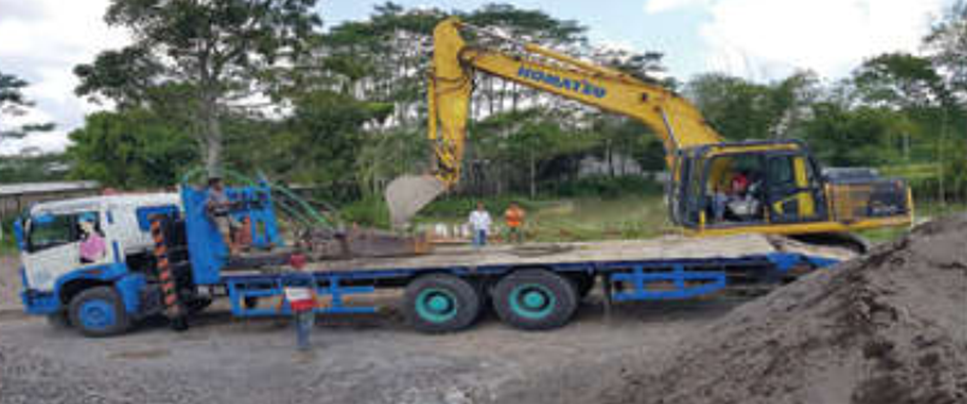
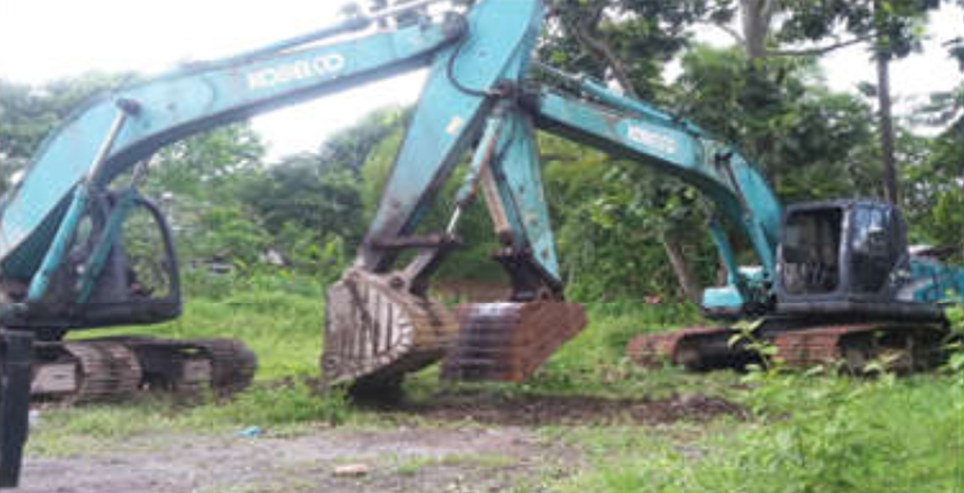
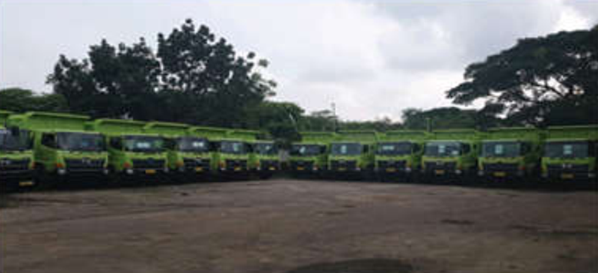

KATA PENGANTAR
Segala puji dan syukur kehadirat Allah SWT yang telah melimpahkan rahmat
berupa kesehatan dan kesempurnaan sehingga kami bisa menyelesaikan
pengurusan pendirian Perseroan Terbatas (PT) HAMADA DHOHO INDONESIA
ini ,
Shalawat beriring salam kami ucapkan kepada junjungan Kami Nabi Besar
MUHAMMAD SAW. yang telah membimbing kita dari alam kebodohan
hingga ke alam yang penuh dengan ilmu pengetahuan ini.
Hikamah dari keberadaan PT. HAMADA DHOHO INDONESIA ini diharap
dapat menambah pengetahuan serta menjadi motivasi bagi kita semua,
utamanya bagi Komunitas Bisnis dan Dunia Usaha di Tanah Air.
Kiranya Company Profile PT. HAMADA DHOHO INDONESIA ini dapat
memberikan gambaran yang jelas terkait dengan apa dan bagaimana
PT. HAMADA DHOHO INDONESIA , baik dari Visi dan Misi hingga budaya yang
dipegang teguh oleh PT. HDI dalam menjalankan bisnisnya.
Dengan bahasa yang sederhana diharapkan dapat membantu Rekanan,
Vendor dan Konsumen serta pihak-pihak lainnya dalam pengenalannya
secara lebih mendalam terhadap PT. HAMADA DHOHO
Kami menyadari bahwa PT. HAMADA DHOHO INDONESIA masih jauh
dari kesempurnaan untuk itu kami mengharapkan saran dan masukan demi
sempurnanya PT. HAMADA DHOHO INDONESIA
Akhir kata kami ucapkan terima kasih.
Kediri Juli 2020
penyusun
PENDAHULUAN
Badan hukum bagi masyarakat kini bukanlah asing lagi, ada badan hukum perseorangan atau pribadi, dan juga badan hukum yang merupakan
organisasi. Badan hukum tersebut merupakan segala sesuatu yang mempunyai hak dan kewajiban, dapat melakukan perbuatan hukum, dapat
menjadi subjek hukum, dan dapat dipertanggungjawabkan seperti halnya manusia jika dikaitkan dengan perbuatan hukum, itu berarti badan
hukum juga mempunyai hak dan kewajiban, harta kekayaan dan tanggungjawab yang terpisah dari orang perorangan.
Beberapa sumber pengertian dari Badan hukum yaitu antara lain, menurut Meinjers Badan hukum adalah meliputi segala sesuatu yang menjadi
pendukung hak dan kewajiban. Sedangkan menurut Logemaren, badan hukum adalah Persenikatic (Personifikasi) yaitu suatu bestendigheid
(perwujudan, penjelmaan) hak dan kewajiban, sedang menurut E. Utreht, badan hukum (Rechrispersoon) yaitu badan yang menurut hukum
berkuasa (berwenang) menjadi pendukung hak, selanjutnya dijelaskan bahwa badan hukum adalah setiap pendukung hak yang tidak berjiwa
atau lebih tepat yang bukan manusia.
Menurut R. Subekti, badan hukum pada pokoknya adalah suatu badan atau perkumpulan yang dapat memiliki hak-hak dan melakukan perbuatan
seperti manusia, serta memiliki kekayaan sendiri, dapat digugat atau menggugat di depan Hakim. R. Rochmad Soemitro mengemukakan bahwa
badan hukum (Rechpersoon) ialah suatu badan yang dapat mempunyai harta, hak serta kewajiban seperti orang pribadi, Sri Sudewi Maschun
Sofyan menjelaskan bahwa manusia adalah badan pribadi, itu adalah manusia tunggal, selain dari manusia tunggal, dapat juga oleh hukum
diberikan kedudukan sebagai badan pribadi kepada wujud lain, disebut badan hukum yaitu kumpulan dari orang.
VISI dan MISI
Visi :
Menjadi Perusahaan Multi Guna terbaik di tingkat Nasional dan Internasional dengan basis pertanian, perikanan, perindustrian dan jasa konstruksi.
Misi :
• Menjalankan perusahaan secara profesional dengan kualitas Prima dalam pelayanan pelanggan.
• Mengutamakan keselamatan kerja dalam segala bidang usaha
• Menjalankan usaha secara berkelanjutan dan berwawasan lingkungan.
• Berkomitmen ketepatan waktu dalam semua pelaksanaan pekerjaan.
• Menempatkan tenaga-tenaga ahli di bidang masing-masing kegiatan guna pelayanan kepuasan pelanggan.
• Menghasilkan nilai tambah bagi kedua belah pihak baik dari pemilik dana maupun stakeholder secara berkesinambungan.
• Menghasilkan produk-produk yang handal dan bermutu dalam mewujudkan customer satisfaction
• Menciptakan lingkungan kerja yang kondusif dan komprehensif sejahterakan karyawan serta memberikan peluang dan kesempatan secara proporsional untuk berprestasi secara profesional
• Melakukan continual improvement dan daya saing sumber daya manusia SDM dalam pengelolaan produk sistem, serta Informasi Teknologi (IT)
EQUIPMENT PERUSAHAAN

